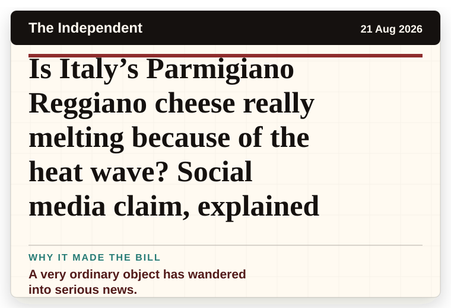
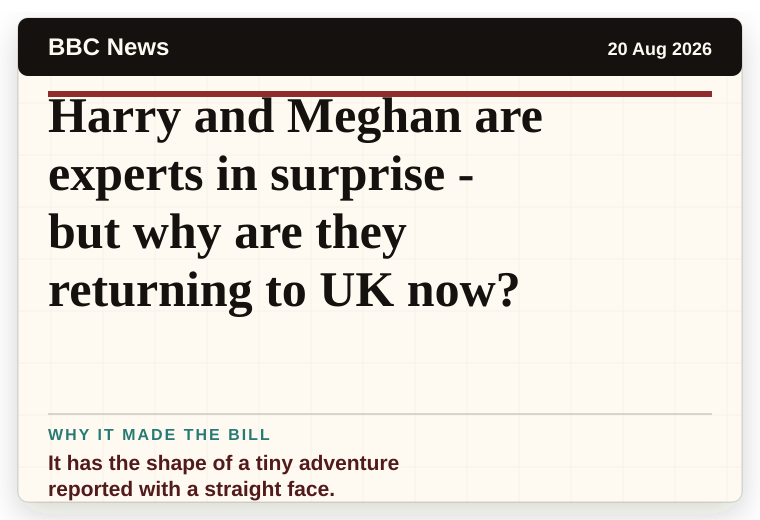
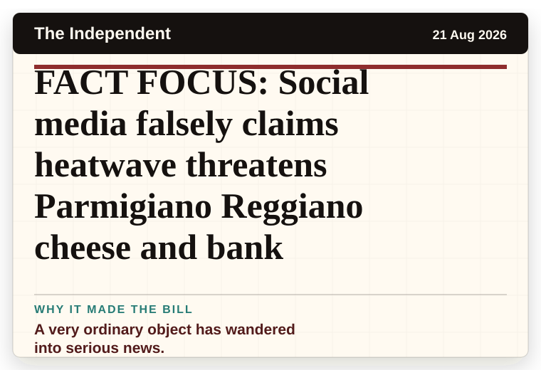
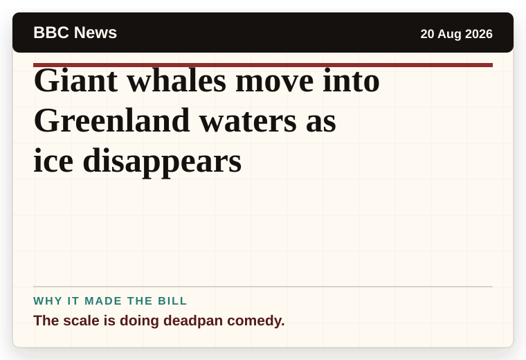
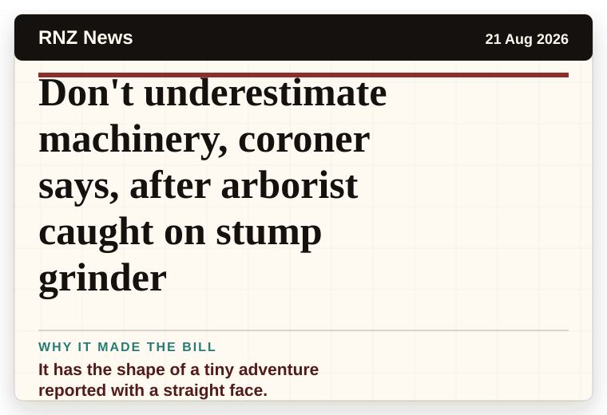
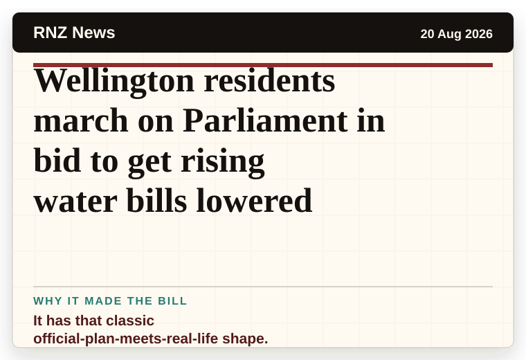
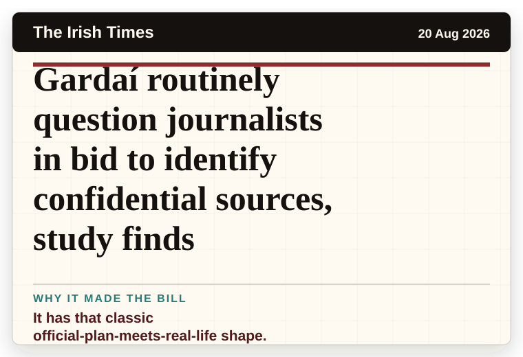
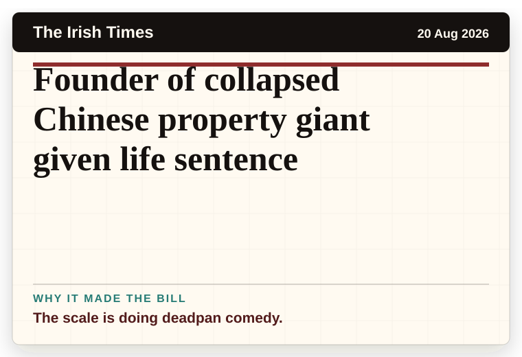
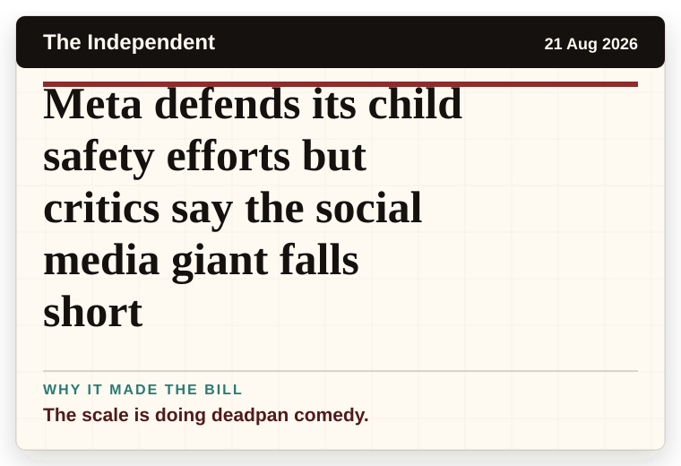
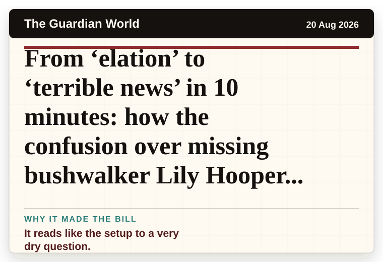

NT News
Australia
‘You’re in the bin!’ Martin punished
A household object has somehow reached the news desk.
The latest daily picks, linked back to the original sources. Search the room, pick a source, or follow a headline out to the full story.
Record updated: 21 Aug 2026, 07:43 AM AEST
Showing 21 headline candidates from the refresh run completed on 21 Aug 2026, 07:43 AM AEST.
A household object has somehow reached the news desk.

It has the shape of a tiny adventure reported with a straight face.

A household object has somehow reached the news desk.

A wonderfully specific detail has taken centre stage.

A mystery is doing a lot of work in a very small sentence.

The headline is already trying not to laugh.

It has the shape of a tiny adventure reported with a straight face.

A wonderfully specific detail has taken centre stage.

A very ordinary object has wandered into serious news.

It has the magic news word: accidentally.

A very ordinary object has wandered into serious news.

It has the shape of a tiny adventure reported with a straight face.

A very ordinary object has wandered into serious news.

It has the shape of a tiny adventure reported with a straight face.

The scale is doing deadpan comedy.

It has the shape of a tiny adventure reported with a straight face.

It has that classic official-plan-meets-real-life shape.

It has that classic official-plan-meets-real-life shape.

The scale is doing deadpan comedy.

The scale is doing deadpan comedy.

It reads like the setup to a very dry question.